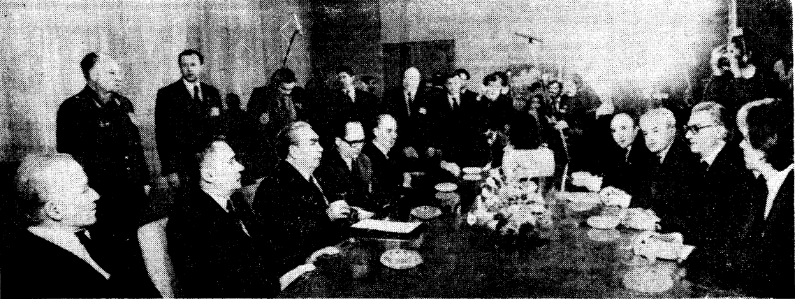

Встреча с руководством Югославии

БЕЛГРАД, 7 мая. (ТАСС). Генеральный секретарь ЦК КПСС, Председатель Президиума Верховного
Совета СССР Л. И. Брежнев встретился сегодня с руководством Югославии.
В беседе, прошедшей в теплой, товарищеской обстановке, приняли участие: с советской стороны
— член Политбюро ЦК КПСС, министр иностранных дел СССР А. А. Громыко, член ЦК КПСС, посол СССР
в СФРЮ Н. Н. Родионов; с югославской стороны — Председатель Президиума СФРЮ Л. Колишевский,
председательствующий Президиума ЦК СКЮ С. Дороньский, член Президиума ЦК СКЮ А. Грличков, член
ЦК СКЮ, союзный секретарь по иностранным делам СФРЮ И. Врхо-вец. Выражая соболезнование в связи
с кончиной И. Броз Тито, Л. И. Брежнев сказал: «Мне лично трудно и больно представить, что из
жизни ушел товарищ Тито. Меня связывали с ним давние добрые отношения. Я ими очень дорожу».
Л. И. Брежнев отметил, что во время встреч с И. Броз Тито были приняты основополагающие
совместные советско-югославские документы, которые и ныне служат прочной основой тесного
сотрудничества между Советским Союзом и Югославией.Советское руководство желает, чтобы в советско-югославских отношениях, продолжал Л. И. Брежнев, всегда
царили атмосфера взаимопонимания и доверия, сердечность, абсолютное равноправие. Многие годы сотрудничества
свидетельствуют, что в лице Советского Союза народы Югославии имеют верного и надежного друга.
Советские люди всегда хотели и хотят видеть братскую Югославию единой, сплоченной, процветающей страной,
успешно строящей социализм. Югославские руководители, со своей стороны, высоко оценили сотрудничество во
всех областях между Югославией и СССР, как по государственной, так и по партийной линии. Обе стороны заявили
о решимости всемерно расширять сотрудничество между КПСС и СКЮ, между СССР и СФРЮ.
ОТЪЕ3Д ПАРТИЙНОЙ ГОСУДАРСТВЕННОЙ ДЕЛЕГАЦИИ СССР
БЕЛГРАД, 8 мая. (ТАСС). Партийно - государственная делегация СССР, возглавляемая
Генеральным секретарем ЦК КПСС, Председателем Президиума Верховного Совета СССР
Л. И. Брежневым, отбыла сегодня из Белграда на Родину. Она принимала участие в похоронах
Президента СФРЮ, Председателя СКЮ И осип а Броз Тито. В состав делегации входили член
Политбюро ЦК КПСС, министр иностранных дел СССР А. А. Громыко, член ЦК КПСС,
посол СССР в СФРЮ Н. Н. Родионов. На Белградском аэродроме делегацию провожали заместитель
Председателя Президиума СФРЮ Ц. Миятович, член Президиума ЦК СКЮ А. Грличков.Среди
провожавших находились посол СФРЮ в СССР М. Орландич и посол СССР в СФРЮ Н. Н. Родионов.
Возвращение товарища Л. И. Брежнева в Москву
Партийно-государственная делегация СССР, возглавляемая Генеральным секретарем ЦК КПСС,
Председателем Президиума Верховного Совета СССР Л. И. Брежневым, 8 мая возвратилась из
Белграда в Москву. В ее состав входили член Политбюро ЦК КПСС, министр иностранных дел
СССР А. А. Громыко, член ЦК КПСС, посол СССР в СФРЮ Н. Н. Родионов. На Внуковском аэродроме
партийно-государственную делегацию встречали члены Политбюро ЦК КПСС Ю. В. Андропов,
В. В. Гришин, А. П. Кириленко, А. Н. Косыгин, М. А. Суслов, Н. А. Тихонов, К. У. Черненко,
кандидаты в члены Политбюро ЦК КПСС М. С. Горбачев, П. Н. Демичев, В. В. Кузнецов,
Б. Н. Пономарев, М. С. Соломенцев, секретари ЦК КПСС И. В. Капитонов, В. И. Долгих,
М. В. Зимянин, К. В. Русаков, члены ЦК КПСС Б. П. Бугаев, Л. М. Замятин, В. Ф. Мальцев,
Г. С. Павлов, В. П. Рубен, Г. Э. Цуканов, А. П. Шитиков, М. А. Яснов, кандидаты в члены
ЦК КПСС А. М. Александров, М. П. Георгадзе, О. Б. Рахманин, С. К. Цвигун, Г. К. Цинев,
член Центральной ревизионной комиссии КПСС Ю. М. Чурбанов, генеральный директор ТАСС
С. А. Лосев, заместитель заведующего отделом ЦК КПСС Г. А. Киселев, референт Генерального
секретаря ЦК КПСС Е. М. Самотей-кин.
Среди встречавших находился временный поверенный в делах СФРЮ в СССР И. Джукич.
Вместе с делегацией возвратился член Центральной ревизионной комиссии КПСС,
помощник Генерального секретаря ЦК КПСС А. И. Блатов.
(ТАСС).
Встреча Л. И. Брежнева с Ким Ир Сеном
БЕЛГРАД, 7 мая. (ТАСС). Сегодня здесь состоялась дружеская встреча Генерального
секретаря ЦК КПСС, Председателя Президиума Верховного Совета СССР Л. И. Брежнева
с Генеральным секретарем ЦК Трудовой партии Кореи, Президентом Корейской
Народно-Демократической Республики Ким Ир Сеном. Л. И. Брежнев и Ким Ир Сен обменялись
мнениями по вопросам советско-корейских отношений и сотрудничества, обсудили
актуальные международные проблемы, представляющие взаимный интерес.
Во встрече, прошедшей в сердечной, товарищеской обстановке, приняли участие:
с советской стороны— член Политбюро ЦК КПСС, министр иностранных дел СССР
А. А. Громыко, член ЦК КПСС, посол СССР в СФРЮ Н. Н. Родионов; с корейской стороны
— министр Народных вооруженных сил КНДР О Дин У, секретарь ЦК ТПК Ким Ен Нам, министр
иностранных дел КНДР Хо Дам.
В СЕРДЕЧНОЙ ОБСТАНОВКЕ
БЕЛГРАД, 8 мая. (ТАСС). Генеральный секретарь ЦК КПСС, Председатель Президиума
Верховного Совета СССР Л. И. Брежнев имел сегодня встречу с Генеральным секретарем
ЦК СЕПГ, Председателем Государственного совета ГДР Э. Хонеккером. В беседе, прошедшей
в сердечной, братской обстановке, приняли участие член Политбюро ЦК КПСС,
министр иностранных дел СССР А. А. Громыко, член ЦК СЕПГ, министр иностранных дел ГДР
О. Фишер.Были затронуты вопросы международной обстановки, ее обострения, вызванного
политикой и действиями империалистических сил. Стороны высказали твердую решимость
приложить все усилия в целях упрочения разрядки в Европе, создания атмосферы уважения
и сотрудничества между государствами и народами. В канун 35-летия Победы над гитлеровской
Германией Л. И. Брежнев и Э. Хонеккер с удовлетворением констатировали дальнейшее
углубление и расширение братских связей между КПСС и СЕПГ, разностороннего сотрудничества
между Советским Союзом и Германской Демократической Республикой, что соответствует
коренным интересам народов обеих стран.
ДРУЖЕСТВЕННАЯ БЕСЕДА
БЕЛГРАД, 8 мая. (ТАСС). Гене ральный секретарь ЦК КПСС, Председатель Президиума
Верховного Совета СССР Л. И. Брежнев принял сегодня Премьер-министра Индии Индиру
Ганди и имел с ней беседу, в которой принял участие член Политбюро ЦК КПСС, министр
иностранных дел СССР А. А. Громыко. Состоялся обмен мнениями по ряду вопросов
советско-индийского сотрудничества в различных областях, масштабы которого последовательно
возрастают. Стороны выразили согласие с тем, что расширение сфер взаимовыгодного
сотрудничества отвечает интересам народов Советского Союза и Индии.
При обсуждении важнейших международных проблем было отмечено, что позиции
Советского Союза и Индии по главным вопросам упрочения разрядки и мира идентичны
и сотрудничество между ними способствует созданию стабильности и добрососедства в
обширном районе земного шара и во всем мире. Беседа проходила в теплой, дружественной
обстановке, в атмосфере взаимопонимания и согласия.
Л. И. Брежнев подтвердил приглашение Премьер-министру Индии И. Ганди прибыть в Советский
Союз с официальным визитом. И. Ганди со своей стороны пригласила Л. И. Брежнева посетить
Индию с официальным визитом.
Похороны И. Броз Тито
БЕЛГРАД, 8 мая. (ТАСС). Югославия проводила сегодня в последний путь Президента СФРЮ,
Председателя СКЮ Иосипа Броз Тито. На похоронах выдающегося руководителя народов Югославии,
видного деятеля международного коммунистического и рабочего движения присутствовала
партийно-государственная делегация СССР во главе с Генеральным секретарем ЦК КПСС,
Председателем Президиума Верховного Совета СССР Л. И. Брежневым. В траурной церемонии
приняли также участие Первый секретарь ЦК БКП, Председатель Государственного совета
НРБ Т. Живков, Первый секретарь ЦК ВСРП Я. Кадар, Генеральный секретарь ЦК СЕПГ,
Председатель Государственного совета ГДР Э. Хонеккер, Генеральный секретарь ЦК ТПК,
Президент КНДР Ким Ир Сен, Первый секретарь ЦК ПОРП Э. Герек, Генеральный секретарь РКП,
Президент СРР Н. Чаушеску, Генеральный секретарь ЦК КПЧ, Президент ЧССР Г. Гусак, член
Политбюро ЦК МНРП, Председатель Совета Министров МНР Ж. Бат-мунх, заместитель Премьер-министра
правительства СРВ Хюинь Тан Фат, член Политбюро ЦК Компартии Кубы, заместитель Председателя
Государственного совета и Совета Министров республики Кар-лос Рафаэль Родригес.
Здесь же находились Генеральный секретарь ФКП Ж. Марше, Президент Финляндии У. Кекконен,
Премьер-министр Индии Индирз Ганди, Президент Сирии X. Асад, Председатель Временного военного
административного совета Социалистической Эфиопии Менгисту Хайле Мариам, Президент АНДР
Ш. Бенджедид, член президиума Революционного совета, заместитель премьер-министра ДРА Султан
Али Кештманд. В похоронах принимали участие видные государственные деятели Франции, Италии,
ФРГ, Англии, США, КНР и других стран. Накрытый полотнищем государственного флага СФРЮ,
гроб с телом И. Броз Тито под звуки траурных мелодий выносится из здания Скупщины СФРЮ
и устанавливается на орудийный лафет. Раздаются залпы артиллерийского салюта. Звучит
Государственный гимн СФРЮ. Траурная процессия медленно движется по улицам города, заполненным
десятками тысяч трудящихся Белграда, многочисленными представителями всех югославских
республик. Город в траурном убранстве: приспущены государственные и партийные флаги.Выступая
на траурном митинге, председательствующий Президиума ЦК СКЮ С. Дороньский заявил, что
Югославия под руководством И. Броз Тито завоевала национальную свободу и добилась больших
успехов в строительстве социализма. И. Броз Тито, подчеркнул он, был участником Великой
Октябрьской социалистической революции, свыше четырех десятилетий возглавлял СКЮ. В своем
выступлении Председатель Президиума СФРЮ Л. Колишевский отметил активную роль И. Броз Тито
в развитии и укреплении дружественных отношений между государствами в борьбе за мир,
разрядку и разоружение. Снова гремят залпы артиллерий ского салюта.
Под звуки «Интернационала» гроб опускается в могилу. И. Броз Тито похоронен в столичном
районе Дединье, поблизости от дома, где он жил.